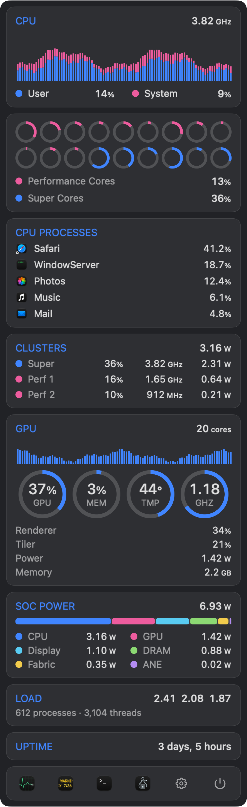
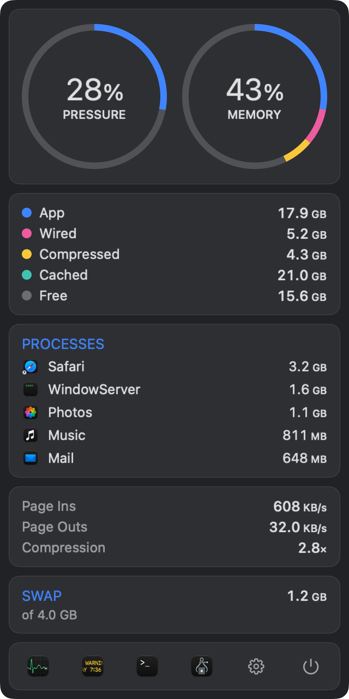
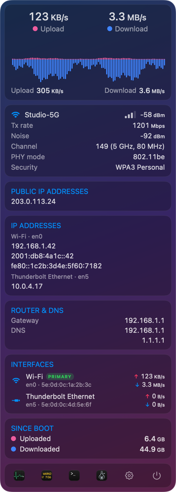
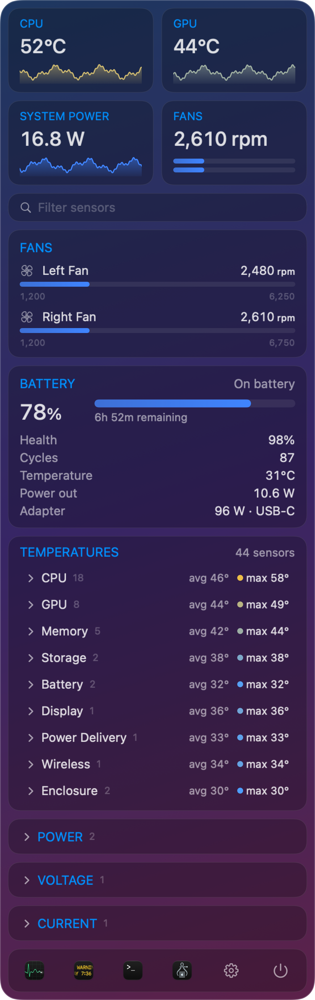

Like iStat Menus, rebuilt for the newest MacBook Pro — and free. XDRStat shows CPU and GPU load per cluster, memory pressure, network traffic and more than 270 temperature, fan and power sensors, including the new M5 sensors other monitors don't read yet.

Each menu bar item opens a detailed panel. Turn on just the ones you want; they update every second and cost almost nothing while closed.
The M5 splits its CPU into a Super cluster and two Performance clusters. XDRStat shows each one separately, straight from the chip's own counters.

Memory pressure tells you when your Mac is actually short on RAM. XDRStat puts it front and center, next to the same breakdown Activity Monitor uses.

Upload and download history at a glance, plus the details you usually dig through System Settings for.

XDRStat reads the Mac's SMC directly and names what it finds: CPU and GPU dies, memory, SSD, battery, display, power delivery and the enclosure.
Detailed sampling only runs while a panel is open. Idle cost is around 1–2% of one core.
No accounts, no analytics, no network calls — except an optional public IP lookup you turn on yourself.
Signed with a Developer ID and notarized by Apple, so it opens without Gatekeeper warnings.
Light and dark menu bars, menu-style vibrancy, Escape to close, and no Dock icon.
Graph, text or compact styles, °C or °F, update interval from half a second to five, and launch at login.
Every line is on GitHub — read how each number is measured, or build it yourself with just the Command Line Tools.
Free — no trial, no subscription, no account. Built for the M5 Pro and M5 Max MacBook Pro.
Download XDRStatXDRStat.dmg once it downloads.If you've used iStat Menus, you'll feel at home: compact menu bar items that open into detailed panels. XDRStat is built specifically for the latest MacBook Pro — it understands the M5's Super and Performance core clusters and reads its full set of sensors, many of which other monitors don't support yet — and it's completely free and open source. iStat Menus covers more Macs and adds extras like disk, weather and time; XDRStat focuses on CPU, GPU, memory, network and sensors.
XDRStat is built and tested for the 2026 MacBook Pro with M5 Pro or M5 Max. Memory, network, GPU and battery work on any Apple Silicon Mac, but core labels, per-cluster frequency/power and sensor names are tuned to the M5 Pro/Max and may be incomplete elsewhere. Intel Macs aren't supported.
Reading temperatures, fans and per-cluster power means talking to the Mac's System Management Controller and Apple's performance counters. App Store apps must run in a sandbox that doesn't allow that — which is why monitors like this are distributed directly. XDRStat is still signed with a Developer ID and notarized by Apple.
No. Everything it shows is readable by a normal user process. There's no privileged helper, kernel extension or password prompt.
It only asks if you click "Show network name" in the Network panel. macOS hides the Wi‑Fi network name from apps without Location access. XDRStat never reads your location.
No analytics, no telemetry. The only network request is the optional public IP lookup (to api.ipify.org), which is off until you enable it in Settings.
Turn off "Launch at login" in Settings, quit it with the power button in any panel, and drag XDRStat from Applications to the Trash.